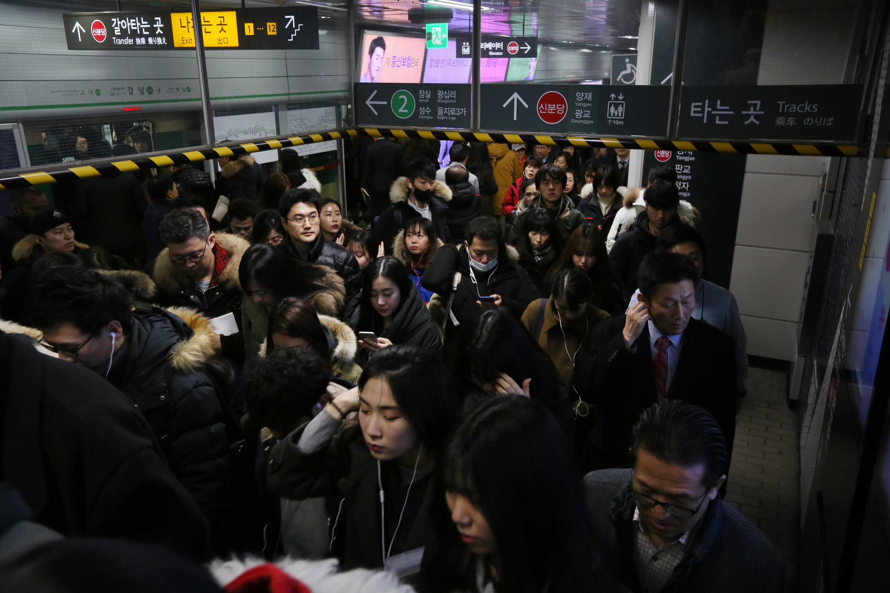

South Korea
South Korea has one of the lowest working poverty rates in the world, with less than 0.3% of its working population below the global poverty line and only 2.7% of its population unemployed. But South Korea’s low global poverty and unemployment rates don’t tell the whole story: the country has the 3rd worst labor rights index score in the world and the 4th highest rate of relative poverty among Organization of Economic Cooperation and Development member nations at 16.7% in 2019, indicating severe violations of workers’ rights and high levels of wealth inequality.
과로사 (gwarosa) translates to “death by overwork.” Though the South Korean government does not officially recognize gwarosa, the phenomenon showcases how the country’s work culture can be extremely harmful for workers’ mental and physical health
Korea’s culture of overwork and poor labor rights may have originated in the mid-twentieth century. After the Korean War in the early 1950s, South Korea faced the gargantuan task of rapidly establishing a new economic system which would facilitate future growth. In order to do so, officials focused on mobilizing labor to maximize industry. This rapid economic growth came at a cost, however, as the government repressed labor rights to reduce the costs of employing South Korean labor: labor unions were restricted, and Korean workers faced low wages, long working hours, and high rates of industrial accidents.
Though labor reform has been in discussion since the 1990s, labor rights violations are still a major issue in South Korea. In addition to a long work week, South Korea places limitations on collective bargaining rights and less than 15% of the country is part of unions. Conditions in the workplace can also be challenging due to cultural conditions that may contribute to workplace abuse, such as workplace abuse based on hierarchical standing, called gapjil.
The contrast between South Korea’s very low working poverty rate and its high rates of labor rights violations and economic inequality show how economic inequality and poor labor rights can go hand in hand, even in countries which are considered “developed.”